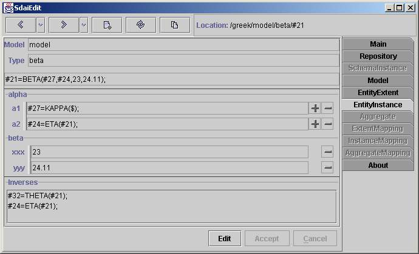

Entity Instance Page

The EntityInstance
page represents attributes and other data related to the one entity
instance. The model
which the instance belongs to and the type of the instance are
represented in the appropriate Model
and Type fields on the top
section of the window. The instance
representation in the physical file format is situated below.
Attributes
Attributes grouped by data types of the
entity are listed in the middle section of the window. An order of data
types of the entity is the same as an inheritance - from the top to the
bottom. It is more complicated for data types of the coplex entity and
a multiple inheritance. Attributes are arranged in the same order as in
the EXPRESS file.
There are three fields for every entity instance in one line (in the
'alpha' layout). The first one is a name of the attribute. The second
one is a type of the attribute. The type
representation is the same as in EXPRESS. You can click on this type
filed to see the
detailed view. The third field is an attribute value with plus and
minus buttons
for
operations. For enumeration, logical and boolean
types
the combo boxe with available values is represented instead of the text
field. If a
type
of the attribute is a mixed select type then the combo box with
available selections besides the attribute value is
placed.
The first and the second fields are separated with a split, so you can
enlarge a view of the attribute
value. You can set a value for the entity type from SDAI clipboard by
using '+' button and unset value for all attributes by using '-'
button.
The third field is used to show the attribute is set or not. If '$'
mark is present at
the
end of the line then the attribute is unset else attribute is set even
if no value
appear
(set with empty string).
Inverses
There are all instances, from which
the instance is referenced, listed under the Inverses separator. If you
are working on the schema instance domain then all inverses from this
domain are listed here.
Button Line
You can set an edit mode and edit
attributes by using 'Edit' button. To accept or cancel changes
use appropriate 'Accept' or 'Cancel' buttons.
Note. While being in the edit mode you are not allowed to go to other
pages without accepting or cancelling chages.